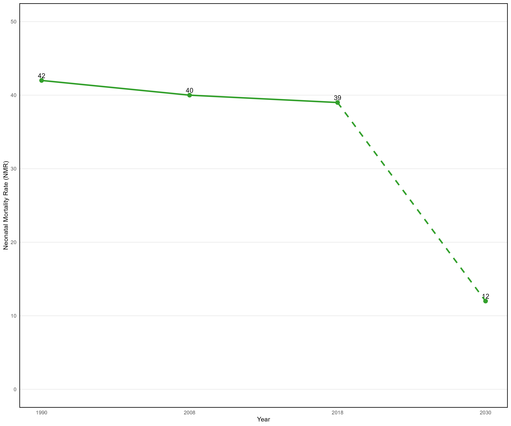

REACHING THE SUSTAINABLE DEVELOPMENT GOAL (SDG) 3 TARGETS IN NIGERIA: EMPHASIS ON PRIVATE-PUBLIC PARTNERSHIPS (PPP) IN PRIMARY HEALTH CARE.
Working paper
1 Introduction
Nigeria has the fastest-growing population in the world, with a current annual growth rate of 2.4% (world bank data). Globally, Nigeria is the 7th most populous country and the largest in sub-Saharan Africa. With an estimated population of 211 million in 2021 and a projected population of 396 million by 2050, further population growth is still imminent. The rapidly growing population is accompanied by increased urbanization, creating a conducive environment for spreading communicable diseases and bringing enormous pressure on health systems.
Nigeria, a low-and-middle-income country (LMIC), is one of the focal points of global population health challenges. Nigeria accounts for 27% of global malaria deaths1 and 10% of global maternal mortality. It is home to the highest prevalence of neglected tropical diseases (NTDs) and highest road injury rate globally, while also on record as the second-highest contributor to global HIV prevalence with its health system ranking 187 out of 197 sampled member countries of the United Nations(Okafor 2016)
The healthcare system which consists of primary, secondary and tertiary healthcare, with primary healthcare being the cornerstone, is one of the key channels for tackling these numerous global health challenges. We can view the healthcare system and these global health challenges through the lens of The Sustainable Development Goal (SDG) 3 tagged “ensuring healthy lives and well-being for all by 2030.” The SDG 3 has thirteen targets, with each target having indicators that measure its performance. These targets cut across maternal health, child health, environmental health, communicable diseases, non-communicable diseases, addiction, and universal health coverage. Healthcare interventions associated with these targets are embedded within the healthcare system with each constituent of the healthcare system having specific targets and interventions it caters to. However, primary healthcare (PHC) being the foundational constituent of the healthcare system, we focused on it and explored how Nigeria can harness it towards improving the healthcare system and reaching the SDG 3 targets. PHC uniquely caters to maternal and child health targets; it is the channel through which maternal and child health interventions are delivered. Hence, it is logical to use maternal and child health indicators to monitor PHC, the healthcare system as a whole, and the SDG 3 targets.
For the last three (3) decades, the progress of Nigeria towards reaching the maternal and child health targets has been minimal and not at the pace required to reach the 2030 goal. This slow progression reflects the poor primary healthcare in Nigeria that can be significantly improved through Private-Public Partnerships (PPP) in primary healthcare and coverage expansion of social health insurance.
2 The SDG 3 Trends in Nigeria
The 17 SDGs were adopted by Governments at the UN General Assembly in September 2015 as a blueprint for global development, after the conclusion of the eight Millennium development goals Program (2017). The SDG 3 focuses on “ensuring healthy lives and promoting well-being for everyone at all ages by 2030”. The United Nations translates this goal into 13 targets – three for maternal and child health; three for communicable diseases, non-communicable diseases, and addiction; two for environmental health; one for universal health coverage and four for tobacco control, vaccines and medicines, health financing and workforce, and global health risk preparedness. Every target has unique indicators, all of which sums up to twenty-eight (28). These indicators serve as tools for measuring the performance of the SDG 3 targets in various countries.
Although every target and indicator are important, we prioritized only maternal and child health targets and their indicators because they tell the state of a country’s primary healthcare and the level of socioeconomic development. Maternal and child health targets aim to achieve reduced maternal and child mortality by 2030 and their indicators include Maternal Mortality Ratio (MMR), Under-5 Mortality Rate (U-5MR), and Neonatal Mortality rate (NMR). We observed the trends in these indicators from 1990 up until 2018 with reference to the 2030 goal.
2.1 Maternal Mortality Ratio
Maternal mortality is death caused by complications from pregnancy or childbirth Olonade et al. (2019) and MMR expresses the number of maternal deaths per 100,000 live births. Achieving reduced maternal mortality (a low MMR) requires equitable access to maternal health care services such as antenatal, delivery, and postnatal services.
MMR in Nigeria considerably declined from 1100 per 100,000 live births in 1990 to 512 per 100,000 live births in 2018; which is approximately 5 women dying for every 1,000 live births. However, this decline rate is not commensurate with the rate needed to achieve the expected goal of 70 per 100,000 live births by 2030; where 0.7 women die for every 1,000 live births Commission et al. (2019) . The slow decline in MMR is attributed to inequity in maternal healthcare access that is caused by factors such as patient-health worker interaction, availability of health workers and medicines, length of waiting times, and socioeconomic variables such as geographical location, education and wealth (NDHS, 2018). Access to antenatal care, delivery services, and postnatal care increased markedly among women with education, women residing in urban areas or southern regions, and women in the highest wealth quintile but was disproportionately so among women with no education, women living in rural areas or northern regions, and women in the lowest wealth quintile. Also, access to maternal health care was higher where health facilities have healthy patient-health worker interaction, adequacy of health workers and medicines, and short waiting times compared to where health facilities have unhealthy patient-health worker interactions, a shortage of health workers and medicines, and long waiting times.

2.2 Under-5 Mortality Rate
Under-5 mortality refers to deaths between birth and the fifth year of life (0-59 months) (NDHS, 2018) and U-5MR expresses the number of Under-5 deaths per 1,000 live births per year. Achieving reduced child mortality (low U-5MR) requires equal access to child healthcare services such as vaccinations and treatment of acute respiratory infections, fever, and diarrhea.
Nigeria’s U-5MR dropped from 193 per 1,000 live births in 1990 to 132 per 1,000 live births in 2018, which is still a huge gap from the expected goal of 25 per 1,000 live births per year by 2030. NDHS, 2018 reports that these trends are attributable to inequity in child healthcare access that is caused by factors such as patient-health worker interaction, availability of health workers and medicines, length of waiting times, and socioeconomic variables such as geographical location, education and wealth. U-5MR was lower among children living in urban areas and southern regions, and among children with educated mothers and wealthy families, compared to their counterparts. It was also lower where health facilities have healthy patient-health worker interaction, adequacy of health workers and medicines, and short waiting times. These differentials impede the decline of U-5MR.

2.3 Neonatal Mortality Rate
Neonatal mortality is death within the first month of life (NDHS, 2018) and NMR expresses the number of neonatal deaths per 1,000 live births per year. Achieving reduced child (0-1month) mortality is greatly dependent on the quality of maternal health care service especially antenatal care and delivery services. Quality maternal health care is defined as skilled healthcare providers, good healthcare structures, and satisfactory service delivery
NMR in Nigeria declined slightly from 42 per 1,000 live births per year in 1990 to 39 per 1,000 live births per year in 2018. With this minimal progress in the last three decades, the expected goal of 12 per 1,000 live births per year by 2030 is likely unrealistic in Nigeria.
Since NMR is closely linked to the quality of antenatal care and delivery service, (NDHS, 2018) its dawdled progress is indicative of low-quality maternal healthcare.

Data source: NDHS, 2018; United Nations(Federal Ministry of Health 2011)
3 Nigeria’s Challenge with reaching the SDG 3 Targets
The key driver of these poor maternal and child health indicators is the underperformance of primary healthcare in Nigeria. The healthcare system in Nigeria consists of primary healthcare, secondary healthcare, and tertiary healthcare delivery. Primary healthcare which serves rural areas is the major provider of primary care such as health education and promotion, simple laboratory tests and preventive interventions Federal Ministry of Health (2011), as well as maternal and child health care services which includes Sexual and Reproductive Health (SRH) services, antenatal and postnatal care, emergency obstetrics (e.g. skilled birth and antibiotics administration), newborn care and child care . Hence, the need to monitor PHC with maternal and child health indicators. Secondary Health Care which serves urban areas provides primary care, curative care Okonofua et al. (2018), radiological, diagnostic, referral and emergency medical and surgical services. Tertiary Health Care which also serves urban areas, focuses on curative care, teaching and research as well as providing primary care Federal Ministry of Health (2011). The Nigerian health care system is majorly public sector (government) driven, accounting for 66% of more than 34,000 health facilities. While the private sector which consists of both private for-profit and private not-for-profit accounts for the remaining fraction. Notably, 33,000 out of the more than 34,000 health facilities are PHCs – a reflection of the importance of PHC to the Nigerian healthcare system(Okonofua et al. 2018).
The trends in Nigeria’s MMR, U-5MR, and NMR show the contributory roles of various factors to inequitable healthcare access and low-quality healthcare that ultimately results in poor health outcome. These factors are usually integrated within the “three delays” model which comprises the delay in seeking healthcare, the delay in reaching health facilities, and the delay in receiving adequate care in health facilities respectively. Ope (2020); Commission et al. (2019) The first delay is strongly associated with late decision making, unawareness signs, birth unpreparedness, the second delay is attributed to unavailability of transport and financial constraints, and the third delay is closely linked to lack of drugs and equipment. Sk et al. (2019) These delays prevent women and children from receiving timely, quality, and adequate essential services along the continuum of care for maternal and child health.
Previous Studies show that PHC can effectively contribute to improving MMR, NMR, and U-5MR by readily providing primary care services such as antenatal care, postnatal care, and malaria therapy. ReliefWeb (2008); (perry201?), Kruk et al. (2010) PHC oriented health systems have produced better health outcomes, enhanced equity, and increased efficiency in low, middle, and high-income countries through its integrated approach to health that includes: primary care and essential public health functions, multisectoral policy, and action, empowered people and communities. Organization et al. (2018) Also, World Health Organisation (WHO) describes PHC as the cornerstone of a healthcare system; and the foundation for improving health outcomes. Therefore, getting it right at the level of PHC would mean a better healthcare system and quick realization of the SDG 3 targets.
3.1 The Inadequacies of PHC in Nigeria
Despite the invaluable role of PHC in improving health indicators and accelerating progress towards reaching the SDG 3 targets, the promotion of a functional and efficient primary health care system remains trivial to the government, policymakers, funders, and healthcare providers in Nigeria. PHC in Nigeria is marred by several inadequacies which include:(Program 2017; Okpani and Abimbola 2015)
Insufficient healthcare resource allocation by government/private
Shortage and maldistribution of health workforce
Inadequately trained health workforce
Improper location of primary health care centers
Poor Interaction between patients and health workers
3.1.1 Insufficient healthcare resource allocation by government/individuals
In Nigeria, meagre healthcare resources are allocated to primary healthcare when compared to secondary and tertiary healthcare because PHC is perceived as minimal and inexpensive healthcare. Abimbola et al. (2015), Organization et al. (2018) This brings about low-quality primary care and most people neglecting PHC facilities to seek primary care at secondary and tertiary facilities. Oyedeji and Abimbola (2014) This act of seeking primary care outside PHC facilities is inefficient because the cost of primary care at secondary and tertiary care facilities is relatively higher. Also, seeking primary care outside PHC facilities promotes inequities because indigent people especially those in rural areas will not have access to healthcare due to the high costs and inaccessibility of secondary and tertiary facilities.(Atim and Bhatnagar 2013; Merson, Black, and Mills 2011)
3.1.2 Maldistribution and shortage of health workforce
The health workforce in Nigeria is unevenly distributed within the healthcare system. This is because health workers prefer to work in secondary and tertiary healthcare than in primary healthcare as a result of the poor incentives or none at all, offered to health workers in PHC facilities Abimbola et al. (2015) . This results in low recruitment and retention of primary healthcare workers, and subsequently, shortage of primary healthcare workforce, and low-quality care in primary healthcare facilities.(Program 2017)
3.1.3 Inadequately trained health workforce
The public and private sectors in Nigeria are training too many hospital-based medical specialists at the expense of investing in and consolidating their primary healthcare medical workforce. This leads to a lower level of expertise among primary healthcare workers, compromised quality of primary healthcare, high levels of fatigue among the small population of primary healthcare workers, and unavailability of health services in the communities where they are needed most.(Organization et al. 2018)
3.1.4 Improper location of primary health care centers
The Nigerian government does very little to control/evaluate the geographic location of public and private primary healthcare facilities. This results in allocative inefficiency which is an overprovision of primary healthcare facilities and healthcare workers in some areas while other areas (especially those in need) are not covered.(Program 2017)
3.1.5 Poor Interaction between patients and health workers
Patients-health workers interaction are measured by indices such as patient satisfaction, time frame for accessing health care, home-based care, interpreters, disability-friendly services, and integration of preventive care and health promotion into primary care services. Since primary healthcare services in Nigeria are not focused on the entirety of individual health needs, the performance of these indices remains poor and this hinders the goal of achieving healthcare for everyone by 2030.
4 Addressing the challenge
Addressing the challenges of PHC in Nigeria requires a paradigm shift from exclusive private primary healthcare and exclusive public primary healthcare to private-public partnership in primary healthcare. In order to provide a compelling argument for private-public primary healthcare, we examined the strengths and weaknesses of exclusive private and public healthcare and how a partnership can help build on these strengths and address the weaknesses.
4.1 Comparing Private Health Care Delivery and Public Health Care Delivery
The relative performance of private health care and public health care can be measured using six health systems themes described by WHO in the 2000 World Health Report. Murray and Frenk (2001) The six themes are accessibility and responsiveness; quality; outcomes; accountability, transparency, and regulation; fairness and equity; and efficiency.
Accessibility and responsiveness Accessibility and responsiveness entail availability, timeliness of service, and hospitality to patients. Majority of people in Nigeria patronize private healthcare facilities because they are often nearer, open for longer hours, have shorter wait times, Bank (2011); Brugha and Pritze-Aliassime (2003) seen as more hospitable, trusted, and dependable, Smith, Brugha, and Zwi (2001); Polsa et al. (2011) than public healthcare facilities.
Quality of healthcare Quality of healthcare encompasses comprehensiveness of services, diagnostic accuracy, management standards, and client retention. Quality of care fluctuates in both private and public sectors. Private healthcare providers are worse in the evidence-based management of diseases. For example, in the evidence-based management of diarrhea and infectious diseases such as tuberculosis and malaria in Nigeria, private healthcare providers have poorer knowledge of correct diagnosis and treatment when compared to public healthcare providers. Notwithstanding, private health care providers are better at providing sophisticated health equipment, making drugs available, and providing quality healthcare service.
Outcomes Outcomes refer to treatment success rates, population coverage, morbidity, and mortality. From a cross-sectional viewpoint, maternal and child health outcomes are superior in areas where private healthcare facilities dominate because of the better accessibility and responsiveness of private healthcare facilities. With states ranked according to the share of labor and delivery services provided by the private sector, the table below shows the disparity in service delivery and outcomes between the top 5 states and the bottom 5 states of the distribution
| State | Private Sector (%) | Infant Mortality Rate | Under-5 Mortality Rate | Skilled ANC (%) | Skilled ANC (%) | Full immunization (%) |
|---|---|---|---|---|---|---|
| Top 5 | ||||||
| Abia | 79 | 55 | 83 | 911 | 91 | 34 |
| Enugu | 77 | - | - | 93 | 92 | 51 |
| Imo | 74 | 66 | 96 | 96 | 96 | 44 |
| Bayelsa | 73 | 57 | 95 | 62 | 38 | 28 |
| Anambra | 71 | 39 | 53 | 98 | 97 | 55 |
| Average | 75 | 54 | 52 | 88 | 83 | 42 |
| Bottom 5 | ||||||
| Bauchi | 32 | 81 | 161 | 60 | 22 | 14 |
| Taraba | 29 | 64 | 105 | 45 | 30 | 12 |
| Zamfara | 28 | 104 | 210 | 42 | 16 | 5 |
The private sector delivers an average of 75% of services in the top 5 states. In contrast, the private sector delivers only an average of 28% in the bottom 5 states. The average infant mortality rate in the top group was 55 per 1,000 live births compared to 81 per 1,000 live births in the bottom group. Likewise, the average under-5 mortality rate among the top group was 83 per 1,000 live births which is about twice less than the under-5 mortality rate of 161 per 1,000 live births for the bottom group.
However, public healthcare is generally associated with better outcomes for public-interest goods such as family planning, treatment of Human Immunodeficiency Virus (HIV) and tuberculosis. While private healthcare is associated with an increase in tuberculosis incidence, and high mortality rates among young women due to unskilled fertility control services.(Basu et al. 2012)
Accountability, transparency, and regulation
This involves data accessibility and quality, public health functions, and reform capacity. Compared to public healthcare, private healthcare is characterized by an extreme paucity of data on delivery practices and outcomes. The public sector performs better than the private sector in performing public-interest functions such as reporting cases of diseases to public health systems. The public sector is well regulated in terms of patient-care practices. Hence, the government directs resources towards assessing accreditation and quality of private healthcare to ensure patient safety
Fairness and equity
Fairness and equity entail financial barriers to care and equal distribution. Financial constraints in accessing healthcare is prevalent in both private and public healthcare. However, the financial constraints are lesser in public healthcare because of the government provision of healthcare subsidies. Private healthcare mostly caters to the needs of those with higher income. While public healthcare caters to the needs of everyone including the indigent and disadvantaged communities thereby promoting equity in the distribution of health services.
Efficiency
Efficiency refers to cost, redundancy, fragmentation, and delays. In Nigeria, the cost of care in the private sector is relatively higher compared to the cost of equivalent care in the public sector. This makes the public sector more cost-efficient in healthcare delivery. Fragmentation in buying and distributing medications in both sectors results in high cost of drugs, redundant treatment, and overall health costs. Delay in tuberculosis diagnosis and greater costs is closely associated with the private sector than the public sector.
Beyond the six (6) health themes which highlights the disparities between private healthcare and public healthcare, data from household surveys across Nigeria show that secondary healthcare facilities (where the private sector accounts for 74% Nigeria (2018) ) are the most patronized for healthcare and dominant recipients of healthcare expenditures. Commission et al. (2019) Estimates based on NDHS 2013 show that the private healthcare delivers 54% of healthcare services nationally; and estimates from NHA 2010-2016 show that private healthcare creates 53% of the total value of healthcare services consumed in hospital/facility settings (primary, secondary and tertiary facilities plus specialized hospitals). However, when the value from other participants in the healthcare value chain 1 – providers of healthcare inputs and ancillary services – are added, the private sector share increases to 65%. The high patronage of private healthcare is closely linked to patient satisfaction. This satisfaction stems from the greater investments in and the effective management of private healthcare that result in better responsiveness, accessibility, and healthcare structures. Although patient satisfaction with private healthcare may be based on measures such as service delivery and healthcare facility structure that are irrelevant to health, however, public healthcare performs better with health-relevant measures such as evidence-based treatment and clinical expertise.
Primary healthcare facilities in Nigeria, which have been estimated to be 33,000 (where the private sector accounts for only 28% Nigeria (2018) ) are the least patronized for healthcare despite its relative affordability. The public sector has grossly mismanaged these primary healthcare facilities and rendered them almost non-functional. This has led to poor healthcare service delivery and underutilization of PHC facilities. People prefer to seek primary care at secondary healthcare facilities even if doing so costs more. Encouraging private-public partnerships that build on the strengths of both sectors while addressing their challenges, is expected to yield significant improvements in primary healthcare in Nigeria.
4.2 Private-Public Partnerships (PPP) in healthcare
PPP in healthcare is a long-term contract between public and private sectors operating as a legal entity. The public sector provides the financial resources, enumerates operational functions, and empowers private sectors to coordinate and manage delivery based on the terms of the agreement. While the private sector gets remuneration for its services and takes up significant risks of the partnership while benefiting from the virtue of shared cost savings.
Developed countries like the United Kingdom, Germany, Spain, and the Netherlands have used Private-Public healthcare to significantly improve health outcomes and speed up their progress towards reaching the SDG 3 targets. While developing countries such as South Africa, Egypt, Ghana, Botswana, Pakistan, Kenya, and Malaysia have taken a cue from developed countries and firmly adopted private-public healthcare. Okafor (2016) In Kenya, a PPP between Family Health International (FHI) 360 and the Ministry of Health reduced treatment costs, improved access to and quality of healthcare
The Nigerian government recognized the importance of private-public partnership in healthcare towards reaching the SDG 3 targets and to this effect, it initiated support for private-public partnership by introducing The National Policy on Private-Partnership for healthcare delivery in 2005. The key primary objectives of the policy are: to build and harness public confidence in the public and private health sectors towards reaching the SDG 3 targets; and ensure a sustainable and strengthened healthcare system. Okafor (2016) Despite the national policy on PPP for healthcare, only one out of the forty projects executed under private-public partnership in 2016, was directed at strengthening healthcare and it was still under implementation. During this time, 60 more new projects were under development, and still, only one was targeted at healthcare.(Nwankwo and PMP 2016)
The implementation of Private-Public partnerships in healthcare in Nigeria has been minimal due to: ineffective partnerships among different stakeholders; inadequate health financing; neglect of primary healthcare alternatives in improving access and efficiency; and low level of health promotion, advocacy, and health education. Hence, health outcomes have remained poor in the country.(Okafor 2016)
4.3 Private-Public partnership in PHC
In India, the government grants under private-public partnerships in healthcare were concentrated on PHC. Private-public partnerships strengthened India’s PHC and this improved access to maternal and child health, reduced mortalities and morbidities among women and children, ensured better quality of care, and made social health insurance work better. This in turn strengthened Private-Public healthcare and improved tuberculosis and HIV intervention outcomes.(Pal and Pal 2009)
A study in Pakistan showed the impact of Private-Public primary healthcare on maternal and child healthcare services such as antenatal care, postnatal care, and immunization. Coverage of these services increased during the period of PPP implementation. Although baseline data were not available for postnatal care, however, data showed an increase in coverage from the PPP pioneer year (2012) to 2013.(Imtiaz et al. 2017)
| Maternal and Child Health Services | Pre-PPP (2010-2011) | Post-PPP (2012-2013) |
|---|---|---|
| Antenatal Care | 8,437 pregnant women | 11,740 pregnant women |
| Postnatal Care | 2,407 (2012) women | 3,317 women |
| Immunization | 12,594 children | 21,656 children |
Lessons from India and Pakistan underscores the importance of private-public partnerships in PHC towards achieving the SDG 3 targets and improving the implementation of Private-Public healthcare. PHC is pivotal to PPP in healthcare because:
- Primary Health Care is a whole-of-society approach to health and well-being by anticipating and meeting the health needs of people along the continuum of care from health promotion and protection, disease prevention and treatment, rehabilitation, and palliative care to people’s everyday environment.(Organization 2021)
- Primary healthcare has a structure that enables sustainable and adequate healthcare financing. Its structure is three-pronged and constitutes: primary care and essential public health functions; multisectoral policy and action; empowered people and communities. This structure is better adapted for the implementation of social health insurance that enables sustainable financing of quality health care and minimizes financial constraints in healthcare access. Social health insurance coupled with primary healthcare is known as Universal Health Coverage (UHC). UHC has a three-pronged focus that constitutes financial protection/reduced household expenditure on health, quality services, medicines and vaccines, and equitable access. The three (3) pronged structure of PHC coupled with social health insurance corroborates with the three (3) pronged focus of Universal Health Coverage (UHC) towards improving health care quality and reducing inequitable access caused by financial constraints and socioeconomic factors such as education.
| UHC COMPONENTS | ||||
|---|---|---|---|---|
| phc components + SOCIAL HEALTH INSURANCE | Financial Protection/reduced householdnexpenditure on health | Quality Services medicines and vaccines |
Equitable Access | |
| Primary care and Essential public health functions |
This component ensures financial protection/reduced household expenditure via population-level and cost-effective health services along the continuum of care vis-à-vis health promotion, disease prevention and treatment, rehabilitation, and palliative care to prevent ill-health and promote well-being. | It provides quality, effective and standard first contact care along the continuum, that is continuous, comprehensive, coordinated, and people-centered. | PHC emphasis on community-based services is an important way to ensure access, even in rural and remote areas, and among disadvantaged populations. | |
| Multi-sectoral policy and action | Addresses underlying financial determinants (upstream/macro level factor) of health outcomes via advocating for health subsidies and social health insurance schemes. Thereby, reducing individual care and expenditure, preventing ill-health, and promoting well-being. | Reduces the burden of disease among the population by addressing upstream/macro-level determinants of health such as environment (e.g. raising awareness on the importance of proper sanitation and hygiene to health), government policies (e.g. encouraging the government to increase taxation on frequently abused substances like tobacco low taxation on substances like tobacco), education (e.g. educating people on positive health behaviors and outcomes) and poverty (e.g. providing cost-effective health services). Thereby, freeing resources for improving the quality and safety of health care delivery. | Increases appropriate access of services by reducing socioeconomic barriers to access such as community design and living conditions (e.g. bringing health care closer to people). | |
| Empowered people and communities | Advocacy for expanding financial protection; people involved in the design of financing systems improve acceptability and increase buy-in, which is critical for scaling interventions. | Advocacy for expanding access; community involvement as co-developers of services leads to the increased cultural sensitivity of health care services and patient satisfaction. It ensures more appropriate use of services and medicines and improves health literacy on vaccines and medicines. This results in better health outcomes. | Advocacy for not leaving anyone behind; people and communities are empowered to function as informal caregivers. |
Source: World Health Organization and the United Nations Children’s Fund (UNICEF).(Organization et al. 2018)
Nigeria has also gained some momentum with private-public partnership in primary healthcare. A tuberculosis program carried out in Kaduna State in Nigeria showed the effectiveness of private-public primary healthcare in tuberculosis treatment. Treatment outcomes compared favorably to state and national figures.(Gidado, Ejembi, et al. 2009)
| Sector | Private | Public | Kaduna state | National | ||
|---|---|---|---|---|---|---|
| Delivery | Primary Health Care | Secondary Health Care | Primary Health Care | Secondary Health Care | ||
| Percentage | 70% | 30% | 60% | 40% | ||
| Treatment success of tuberculosis | 81.3% | 80.4% | 81.0% |
Also, a study assessing the contributions of private health facilities in a pioneer private-public partnership in childhood immunization in four (4) local government areas of Abia State in Nigeria, showed the positive impact of PPP on immunization services. Oluoha, Umeh, and Ahaneku (2014) A large number of people benefited from the immunization program.
| Local Government Area | Type of Health Facility | Number of health facilities offering immunzation services | Total number immunized in 2011 |
|---|---|---|---|
Abia North Umuahia North Aba South Osisioma |
Private | 79 (45%) | 6,207 (20.80%) |
| Public | 96 (55%) | 23,630 (79.20%) | |
| Total | 175 (100%) | 29,837 (100%) |
Adopting private-public partnerships in primary healthcare raises concerns about sustainable healthcare financing. Social health insurance, through its financial risk pooling, is one of the key ways to address these issues on the financial sustainability of private-public partnerships in PHC, towards improving health outcomes and reaching the SDG 3 targets. Also, there are concerns about healthcare affordability. Private-public partnerships in PHC only limitedly address the financial constraints associated with accessing healthcare because the financial protection offered by PHC in itself is limited; contrary to popular beliefs in Nigeria, PHC is not cheap or free healthcare. However, social health insurance has the capacity to address these financial constraints to a large extent. It is important to note that social health insurance does not reduce total health expenditure but rather reduces out-of-pocket spending by pooling financial resources.
6 CONCLUSION
Reaching the SDG 3 targets in Nigeria would be impossible if the country continues its business-as-usual in the healthcare sector. To improve health indicators and accelerate progress towards reaching the SDG 3 targets, the government and individuals must direct attention to the PHC component of the healthcare system. All hands must be on deck to ensure that Nigeria shifts from exclusive private and public primary healthcare to private-public primary healthcare while simultaneously expanding social health insurance to ensure that every one of all ages everywhere has access to quality healthcare.
7 Reference
Footnotes
These include medical, dental and other practices, home healthcare service providers, ancillary services and other secondary providers, retailers and other providers of medical goods, providers of preventive care, health system administration and financing and other services imported into the country↩︎
5 Social Health Insurance
Health insurance is protection from financial hardship in accessing health care, reduction of out-of-pocket spending, and a means of ensuring sustainable healthcare financing. Health insurance can either be private, social, community-based or tax-based systems. But most countries that have made substantial progress towards UHC, adopted social health insurance Okpani and Abimbola (2015) because other forms are quite expensive and not everyone can afford them. The government of Nigeria aligned itself with the UHC goal and introduced social health insurance through which the people together with the government pool health risks and financial resources for health care. The government investments in the scheme act as a subsidy to the health premiums paid by the people. The central scheme in Nigeria which provides social health insurance is the National Health Insurance Scheme (NHIS)
NHIS is a private-public arrangement that pays for the healthcare services of contributors with the common pool of funds contributed by the participants of the scheme. It is a pre-payment plan where participants pay a fixed regular amount and the contributions are sent as capitation prepayments/fee-for-service and pay-for-performance on behalf of the enrollees to private and public healthcare providers respectively. NHIS is funded by the federal government of Nigeria through the Basic Health Care Provision Fund (BHCPF) which was established under the National Health Act of 2014 – of which 50% of the fund is allocated to the scheme. Despite the introduction of social health insurance, out-of-pocket (OOP) spending which is targeted to be within the 30% to 40% range actually increased from 68.6% in 2013/14 to 71.5% in 2016/17 because the proportion of the population covered by the prepayment schemes remains underwater; current estimate is estimated to be around 3%, compared to the 90% target of UHC. NHIS and private insurance majorly provide coverage to federal public sector workers, their families, and workers of large private organizations while the large majority of Nigerians are without any form of coverage. This narrow coverage of social health insurance is attributable to the greater federal government funding of health (considering Nigeria’s low-income status) and the poor participation of the state government in the social health insurance regulated by NHIS.
To reduce out-of-pocket spending and healthcare disparities, and ensure that everyone everywhere has access to quality health care whenever they need it without financial hardship, social health insurance coverage must be expanded alongside the adoption of private-public partnerships in PHC. The insurance pool spreads the financial risk of ill health among the insured population. Therefore, the larger the pool, the more sustainable it will be, as out-of-pocket spending tends to decrease and risks are more evenly spread.(Okpani and Abimbola 2015)
Expanding social health insurance entails the federal government of Nigeria, through NHIS, providing technical support to the states across the federation to establish and operationalize their state-led social insurance scheme in order scale-up social insurance health insurance to the public sector workers at the state and local levels as well as the informal sector workers. The disadvantaged populations who cannot afford to pay for premiums should be fully covered by the BHCPF allocated to NHIS to serve as healthcare subsidy.(Okpani and Abimbola 2015)